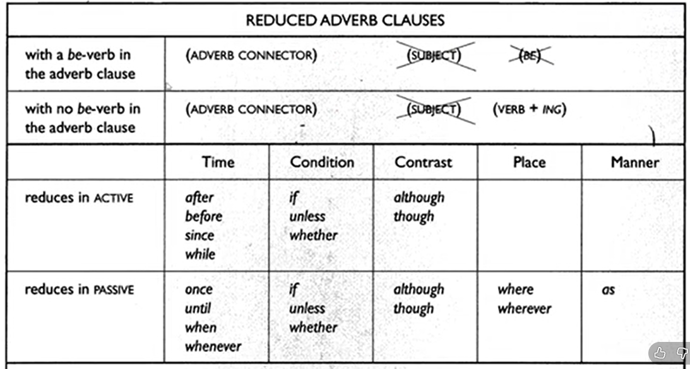

Pelajari teori lalu uji dengan latihan interaktif (feedback langsung).
Use Adjective Clauses Correctly
SENTENCES WITH REDUCED CLAUSES
Dalam Bahasa inggris clause dapat hadir dalam bentuk yang lengkap ataupun reduced. Contoh :
My friend should be on the train which is arriving at the station now
My friend should be on the train arriving at the station now
Although it was not really difficult, the exam took a lot of time
Although not really difficult, the exam took a lot of time
Dua kalimat pertama menunjukan adjective clause yang di reduced, sedangkan dua kalimat terakhir menunjukan adverb clause yang di reduced.
Dalam bentuk reduced, connector dari adjective clause dan be yang mengikutinya dihilangkan. Contoh :
The woman who is waving to us is the tour guide
The woman waving to us is the tour guide
The letter which was written last week arrived today
The letter written last week arrived today
Apabila tidak ada be didalam adjective clause tersebut maka connector dihilangkan dan verb ditambahkan -ing. Contoh :
I don’t understand the article which appears in today’s paper
I don’t understand the article appearing in today’s paper
Apabila adjective clause di antarai oleh {,} maka perubahannya sbb :
The white house, which is located in Washington, is the home of the president
Located in Washington, the white house is the home of the president
The president, who is now preparing to give a speech, is meeting with his advisors
Now preparing to give a speech, the president is meeting with his advisors
INGAT!! Apabila connetornya tidak menjadi subject dari adjevtive clause tersebut, maka clause tersebut tidak boleh di reduced. Contoh :
The woman that I just met is the tour guide
The letter which you sent me arrived yesterday
Use Reduced Adverb Clauses Correctly
Adverb clause juga dapat di reduce. Ketika di reduced, connectorsnya tidak hilang, yang hilang hanya subject dan be. Contoh :
Although he is rather unwell, the speaker will take part in the seminar
Although rather unwell, the speaker will take part in the seminar
When you are ready, you can begin your speech
When ready, you can begin your speech
Apabila clause itu menggunakan subject dan verb, maka subject dihilangkan dan verb ditambahkan -ing. Contoh :
Although he feels rather sick, the speaker will take part in the seminar
Although feeling rather sick, the speaker will take part in the seminar
When you give your speech, you should speak loudly and distinctly
When giving your speech, you should speak loudly and distinctly

Untuk beberapa adverb connector diatas hanya bisa di reduced dalam bentuk passive. Contoh :
Once you submit your thesis, you will graduate (tidak bisa reduce karena aktif)
Once it is submitted, your thesis will be reviewed (bisa di reduce karena pasif)
Once submitted, your thesis will be reviewed